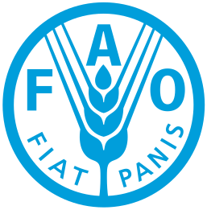
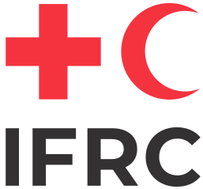

Automatic Kobo sync
Submissions and audit logs are pulled in and merged on a schedule, so the dashboard reflects what the field sent today.
Field Compass pulls your KoboToolbox submissions and audit logs, runs your validation rules against every record, and shows you exactly which submissions, which questions, and which enumerators need a second look.
Open source and self-hostable — your data never leaves your infrastructure.
Point Field Compass at your existing KoboToolbox project. Nothing about your forms or workflow changes.
Describe a check the way you'd say it out loud. Field Compass turns it into a rule that runs on every submission.
Audit logs reveal interview duration and post-submission edits — the signals a spreadsheet export throws away.
Trusted by teams at the world’s leading humanitarian and development organisations


Works with any KoboToolbox project — the collection platform these teams already run in the field.
One place to define quality, spot problems early, and act on them while corrections are still cheap.
Submissions and audit logs are pulled in and merged on a schedule, so the dashboard reflects what the field sent today.
Compose range checks, required fields, skip-logic and cross-question conditions without writing code — then reuse them across rounds.
Write “flag any survey completed in under 10 minutes” and get a structured rule back. Or let Field Compass read your form and propose the checks itself.
Pass rates, issue trends over time, and validation status at a glance — and which questions attract the most flags, so a wording problem doesn't get mistaken for a field problem.
Compare interview duration, flag rates and output per enumerator, so retraining goes to the people who actually need it — and nobody gets a lecture for a badly worded question.
See which answers changed after a submission was first sent, when, and by whom — the audit trail your funder will ask about.
No data migration, no new collection app for your team to learn.
Add your Kobo API token — stored encrypted, per user — and pick the form you want to watch. Field Compass reads submissions and audit logs from there.
Build checks in the rule editor, describe them in plain English, or start from the set the AI suggests after reading your form.
Watch the quality dashboard as data lands and review what gets flagged. Follow up with your field teams on the issues that come up while the enumerator is still in the area — when a correction is a phone call, not a return visit.
A submission arrives, gets checked, and — if something looks wrong — reaches the person who can still fix it.
#4821 arrives from the field, audit log attached — timings, edits and all.
Your rules run against it, and the open-ended answers go to the review queue.
Completed in four minutes. It surfaces on the dashboard with the reason attached.
You reach the enumerator while they're still in the area, and mark it resolved.
The whole loop closes in hours, not at the end of the round.
Writing validation logic is the part that stalls a quality plan. Hand it over: Field Compass reads your questionnaire, drafts the rules, and keeps working through incoming answers while you get on with the survey.
It writes the rules. “Flag if respondent age is greater than 100” becomes a structured rule that runs on every submission from then on.
It reads your form first. Field Compass analyses your questionnaire and proposes the range, consistency and required-field checks it expects you'll need — before you've written a line of logic.
It keeps working in the background. Qualitative checks run on their own queue, reading open-ended responses for empty, off-topic or copy-pasted answers while you do something else.
It reports back before it acts. Every rule it drafts arrives as a plain condition you can edit, test or discard. It proposes; you approve.
{
"name": "Interview too short",
"field": "active_interview_time",
"operator": "less_than",
"value": 600,
"severity": "high"
}Create an account and connect your first Kobo form in minutes.